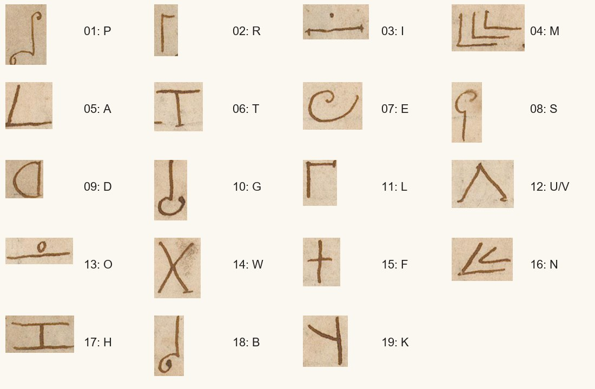

At a glanceKey from external plaintext · complete
- The document
- An anonymous five-line cipher of 79 graphic signs, written before the title page of a 1618 volume. It has no signature, recipient or date.
- Where
- Zentralbibliothek Zürich, SCH R 201, image 1033442. DECODE R4817 lists it as “Non-decrypted”, meaning no decipherment is attached to the record.
- The cipher
- A simple substitution with 19 distinct sign forms. No nulls, homophones or word codes are needed.
- How it was read
- Anne-Simone Rous’s partial decipherment, published by Uwe Maximilian Korn in 2023, was used as a crib. The key was then rebuilt against the original scan, which separates M from N and D, P from B, and O from I.
- What it says
- German: Prima materia ist die Galle vom Widder, the vessel is a half-round sphere, the furnace is the balance.
- Still open
- All 79 signs have a value and 78 give sense without a textual correction. The last letter of GEFAE is marked as an emendation. No independent clear copy or historical key was found.
- Credit
- Anne-Simone Rous (decipherment) and Uwe Maximilian Korn (publication, 2023).

01 What the object is
The cipher is on the blank surface before the title page, library canvas [2], image 1033442. The library dates the volume to 1618 and attributes the work to Daniel Mögling, writing as Theophilus Schweighardt. Neither fact dates or identifies the anonymous cipher annotation: it has no signature, recipient or date. The full volume has 42 digitized surfaces. A visual survey found no further specimen of this cipher or corresponding key.
The pencil note above the cipher concerns the author's pseudonyms. It is not an interlinear decipherment. The cipher is available publicly through the library's IIIF service; a DECODE login is not needed to inspect the original.
02 All five lines
This is the literal output of the reconstructed key, preserving line breaks. Word divisions are editorial; the common U/V sign is rendered U. Punctuation is omitted from the sign count.
PRIMA MATERIA IST DIE GALLE UOM WIDDER DAS GEFAE IST EINE HALB RUNDE KUGEL DER OFFEN IST DIE WAGE
With UOM read as VOM, historical spelling normalized, and the conjectural final letter bracketed:
Prima materia ist die Galle vom Widder. Das Gefä[ß] ist eine halbrunde Kugel. Der Ofen ist die Waage.
In English: “The prime matter is the gall of the ram. The vessel [emended] is a half-round sphere. The furnace is the balance [or Libra].” This identifies the wording, not a practical chemical procedure. An astrological or other alchemical interpretation of ram and balance is possible but has not been established.
03 Separating similar signs
The published partial decipherment supplies many cribs, including repeated IST, DIE and the phrase about a round sphere. The opening gives no sense if the nested angles are confused with the semicircular D, or if the first curled staff is taken for F. Three nested angles give M in PRIMA, MATERIA and VOM. Two give N in EINE, RUNDE and OFFEN. The semicircle is D.
The first curled staff has an upper curl as well as a lower one: P. The B of HALB has only the lower curl. The cross supplies F consistently in GEFAE and the two adjacent F positions of OFFEN. A solid dot above a line is I, whereas an open ring above a line is O. The three signs after GALLE are therefore V-O-M. The result means “gall of the ram”; it does not enumerate “gall and ram.”

The repository pairs a sign-ID transcription with this key and replays it mechanically. Line lengths are 15, 17, 15, 17 and 15: 79 signs, 19 distinct forms. No nulls, homophones or word codes are needed. Letter shapes vary, especially the arms distinguishing R and L; the image and repeated words support the separation.
04 The emendation
The last sign of GEFAE, line 3 position 8, looks like E and is decoded E by the same table as every other occurrence. Changing its key value globally destroys the rest of the reading. Gefäß is strongly indicated by “is a half-round sphere,” but the required S/ß is not there. A copying or enciphering error is the likely explanation; it remains a conjecture.
Coverage is reported in two ways: 79/79 assigned, and 78/79 (98.73%) coherent without emendation. The latter is the conservative completion measure. Under this repository's provenance grades, reconstructed values are I (context-derived) and the editorial repair is M (uncertain). The key is complete only for occurring signs; unobserved letters are unknown. The writer, annotation date and precise alchemical meaning remain open.
Full texts
The transcription and the decryption of every document on this page, so that the reading can be used and checked. Short files are shown here; all are in the repository.
SCH R 201, cipher flyleaf
Five lines of German alchemical note on the inside front board of Mögling's Speculum sophicum rhodo-stauroticum (catalogued 1618): 'Prima materia ist die Galle vom Widder. Das Gefä[ß] ist eine halbrunde Kugel. Der Ofen ist die Waage.' Unsigned and undated; Anne-Simone Rous's partial decipherment (Korn 2023) was the crib.
Transcription
01 02 03 04 05 04 05 06 07 02 03 05 03 08 06 09 03 07 10 05 11 11 07 12 13 04 14 03 09 09 07 02 09 05 08 10 07 15 05 07 03 08 06 07 03 16 07 17 05 11 18 02 12 16 09 07 19 12 10 07 11 09 07 02 13 15 15 07 16 03 08 06 09 03 07 14 05 10 07
Decryption
PRIMA MATERIA IST DIE GALLE UOM WIDDER DAS GEFAE IST EINE HALB RUNDE KUGEL DER OFFEN IST DIE WAGE
Decryption
# Reading of the cipher flyleaf, SCH R 201 Primary source: e-manuscripta, image 1033442, canvas [2], the inside front board / first blank surface before the title page. The book is catalogued 1618; the cipher itself carries no date or signature. ## Literal substitution ```text PRIMA MATERIA IST DIE GALLE UOM WIDDER DAS GEFAE IST EINE HALB RUNDE KUGEL DER OFFEN IST DIE WAGE ``` U and V share one sign: UOM is read VOM. Commas are visible after GALLE, WIDDER, KUGEL and at the end; they are not cipher tokens. The first one need not be modern syntactic punctuation. Spaces above are editorial word divisions consistent with the broad manuscript spacing. ## Conservative reading Prima materia ist die Galle vom Widder. Das Gefae [wohl: Gefäß] ist eine halb runde Kugel. Der Offen ist die Wage. ## Normalized German (one explicit emendation) Die Prima Materia ist die Galle vom Widder. Das Gefä[ß] ist eine halbrunde Kugel. Der Ofen ist die Waage. The final ß of Gefäß is an editorial replacement of the E actually obtained from the cipher, not a recovered sign. The f is an inferred key value, supported again by both crosses in OFFEN. ## English The prime matter is the gall of the ram. The vessel [emended] is a half-round sphere. The furnace is the balance [or Libra]. These are the words, not a demonstrated chemical recipe. Whether ram and balance carry zodiacal or other alchemical meanings remains undetermined. ## Confidence and coverage All 79 signs in 19 classes receive values. Of them, 78/79 (98.73%) read without a conjectural textual correction; line 3 sign 8 is clearly the E sign, but GEFAE does not make a satisfactory word in context. GEFAS / Gefäß is the likely intended word, graded M. The remaining reconstructed mappings are I under this repository's provenance grades (inferred from repeated words and context, not read from an archival key). This is a reading assisted by prior partial work, not an independent ciphertext-only break. ## Prior work and the changes Anne-Simone Rous's partial reading is printed by Uwe Maximilian Korn (2023), p. 178 n. 41. It was found before this attempt and used. The main corrections are PRIMA MATERIA (distinguish the two forms of curled staff and the triple angles), VOM (ring rather than dot; triple rather than double angles), F for the crosses, and N for the double angles ending OFFEN. The anomalous final E of GEFAE is retained as a source discrepancy. No full earlier decipherment was found in the searches recorded in NOTES.md.
Translation
<!-- English translation of the conservative reading in READING.md (Claude Opus 5.5, 23 Oct 2026): the cipher flyleaf of SCH R 201 (e-manuscripta image 1033442), German, deciphered here with Anne-Simone Rous's partial reading (Korn 2023) as a crib. "Gefae" is taken as Gefäß (vessel), the one emendation, marked. --> # SCH R 201, the cipher flyleaf (catalogued 1618): English translation The prime matter is the gall of the ram. The [?vessel] is a half-round sphere. The furnace is the balance [or Libra].
Key: key.json, key-decode.txt
05 Sources and credit
- Zentralbibliothek Zürich, SCH R 201, Speculum sophicum rhodo-stauroticum, catalogued 1618. Cipher surface, image 1033442. Library images: Public Domain Mark.
- DECODE R4817, checked September 2026: Non-decrypted (no decipherment attached), Unknown cipher type, graphic signs. Catalogue item 271 has been removed from this project's open list; a database correction is queued.
- Uwe Maximilian Korn, “‘Bilderfahrzeug’ of the Rosicrucians”, in Between Manuscript and Print (2023), pp. 159–186, especially p. 178, fig. 11 and n. 41: partial decipherment credited to Anne-Simone Rous. Open chapter. Her work was consulted before this attempt and used as a crib.
Targeted title, shelfmark and Tomokiyo searches located no additional full solution. Exact-phrase searches did not locate an independent parallel. The work here completes and corrects Rous’s partial decipherment.
Transcription, key, literal reading, token ledger and notes: targets/r4817/ in the repository.